Java SE 6.0 compliance
The Java SE 6.0 compliance is now fully supported.
In particular, StackMapTable attributes
(see JSR 202)
are now generated in .class files with a 1.6 target.

Category support
Categories are a new Java 6.0 feature.
Categories can be defined in Javadoc comments for types, methods, and fields using the @category tag.

Categories are now shown in the Outline view, the Quick Outline, and the Members view in the Java Browsing perspective. Also available is a filter to specify which Categories should be shown.

All these features are available independent of the compiler compliance level.
System property launch variable
A new launch variable allows to dynamically specify system properties as Java program and VM arguments from the Eclipse runtime. The variable accepts a single argument which is the name of the system property to be resolved at launch time.
For example, the java.home system property would be referenced with ${system_property:java.home}.

Evaluation support for arrays
Evaluation and content assist are now supported for Java arrays.
Use this to refer to the selected array.

Launch configuration filters
The launch dialog and launch history menus support a set of filters that can be configured on the Run/Debug > Launching > Launch Configurations preference page. You can filter configurations from closed, deleted, or unavailable projects. As well, you can filter specific kinds of configurations. The dialog and history menus optionally support the current workbench window working sets.
You need to migrate your existing launch configurations for resource-based filtering to work. This can be done by pressing the Migrate... button on the preference page.

The filters are also available for easy access in a new toolbar in the launch dialog.
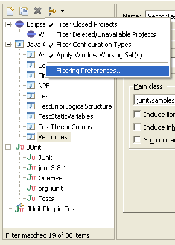
Java thread groups
You can now display thread groups in the Debug View by toggling Show Thread Groups in the view menu.

Runtime classpath exported entries
A runtime classpath can be configured to include only exported entries from the build path. By default, a runtime classpath includes all entries (exported and non-exported).
From the Classpath tab select the default entry and use the Edit... button to configure the option.
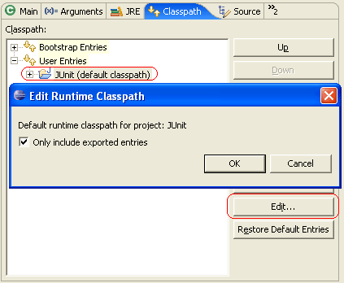
Suspend Thread versus Suspend VM
An option has been added to the Java > Debug preference page to control whether newly-created breakpoints suspend a single thread or the entire VM.

Null reference analysis
The Java compiler is now capable to perform basic null reference analysis for local variables.
This optional diagnosis can be enabled using the Java > Compiler > Errors/Warnings > Potential programming problems > Null reference preference.

Note that the analysis is fairly conservative, aligned on definite assignment
rules. It only considers
cases where there is something suspicions (e.g., if later on a null check
is performed), rather than complaining on all possible cases. The analysis could be further improved by introducing annotations
(@CanBeNull, @CannotBeNull) which would
need to get standardized first.
In 5.0 compliance mode, null reference warnings can be silenced using
@SuppressWarnings("null").
Improved syntax recovery
The internal Java parser is now much more resilient to syntax errors. In Eclipse 3.1, a syntax error would prevent subsequent errors from being displayed. The parser can now recover from statements with errors and go on to perform further analyses.
In the following example, the invalid reference to method bar()
is detected despite the missing semicolon in the previous statement.

This for example allows refactorings that only affect a single file to tolerate syntax errors. For instance, it is now possible to rename or extract a local variable at the top of a method that has not yet been written completely.

Command line code formatter
It is now possible to format source code without starting the Eclipse UI using the new headless formatter application. The command line formatter works as a standard Eclipse application.
The following command will format the source files in the folder src with the options specified in the config.prefs file:
eclipse -application org.eclipse.jdt.core.JavaCodeFormatter -config
d:/config.prefs c:/src
See Help > Java Development User Guide > Tasks > Using the Formatter Application for details.
Completion in Javadoc comments
Completion is now available in Javadoc comments. The proposals include both: an "@link" proposal and a regular reference proposal.

Grouping Java problems
Java problems can now be grouped into categories.
This can be enabled using the Group by > Java Problem Type option in the Problems view.

All errors treated as fatal are now grouped into the Fatal Errors category.
The option Java > Compiler > Building > Treat configurable errors as fatal errors controls if a configurable error is intended to be fatal or not. This option is enabled by default.
Detection of unnecessary $NON-NLS$ tags
Unnecessary $NON-NLS$ tags are now detected.
A problem is reported if a line comment starts with //$NON-NLS-x$ and
no corresponding string exists on the same line.
The reporting can be turned on and off using the same preference as for the detection of non-externalized Strings. It can be set using the Java > Compiler > Errors/Warnings > Code Style > Non-externalized strings (missing/unused $NON-NLS tags) preference.

To remove the unnecessary tags use Quick Fix (Ctrl + 1), or Ctrl + 1, Ctrl + Enter to remove all unnecessary tags within a compilation unit.
Detection of raw type usage
Usages of raw types are now detected.
A raw type is a reference to some generic type without any type argument
(e.g. List in place of List<Element>).
This optional diagnosis can be enabled independently from unchecked type operations using the Java > Compiler > Errors/Warnings > Generic types > Usage of a raw type preference.

This warning can be silenced by @SuppressWarnings("unchecked").
Also a Quick Fix has been implemented to help resolving the raw type usage problem.
Detection of method parameter assignments
Assigning to method parameters is considered poor practice.
To detect and report such assignments enabled the Java > Compiler > Errors/Warnings > Code style > Parameter assignment preference.

Detection of unnecessary casts
The Java compiler now detects casts which are unnecessary because the expression already has the appropriate type.
Use the Java > Compiler > Errors/Warnings > Unnecessary code > Unnecessary cast or 'instanceof' operation preference to turn the reporting on and off.
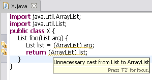
In 5.0 compliance mode, @SuppressWarnings("cast")
can be used to suppress unnecessary cast warnings.
A quick fix to remove the unnecessary cast has been implemented.
Detection of unused labels
The Java compiler now detects unused statement labels.
This optional diagnosis can be enabled using the Java > Compiler > Errors/Warnings > Unnecessary code > Unused break/continue label preference.

Detection of switch case fall through
The Java compiler can now detect if a case may be entered by falling through a previous case. Empty cases are allowed.
This optional diagnosis can be enabled using the Java > Compiler > Errors/Warnings > Potential programming problems > Switch case fall through preference.

A quick fix to add a break statement to the previous case has been
implemented.
CamelCase support in search engine
The Java search engine now supports CamelCase patterns.
For example, searching for references to NPE will find all references
to NullPointerException.
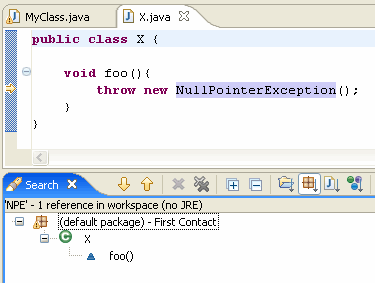
Anonymous class file name change
In 5.0 compliance mode, the internal class file name for an anonymous class is derived from the innermost enclosing type name, e.g. X$1$1 for an anonymous class nested inside another anonymous class. Before 5.0 it would have been named X$2.
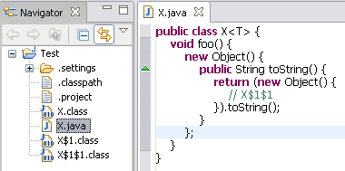
Support for Java-like extensions
Files with a file extension other than .java and containing pure Java code are now supported. A Java-like extension can be added using the General > Content Types > Text > Java Source File preference.

Suppressing warnings for access restrictions
In 5.0 compliance mode, @SuppressWarnings("restriction")
can now be used to suppress warnings for access restrictions.
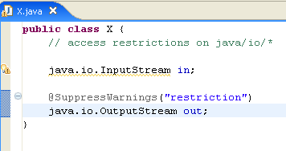
The batch compiler also supports two warning options: discouraged
and forbidden.
Specify -warn:-discouraged,forbidden on the batch compiler command
line to suppress both warnings.
Improved diagnosis for assignments with no effect
Diagnosis for assignments with no effect can now recognize the following patterns:
int i = i = 0;i = i = 0;i = ++i;
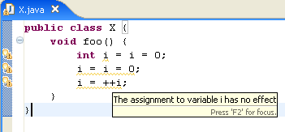
Recreating modified .class files
The Java builder can now recreate modified or removed .class files in the output folder using the original source.
This can be controlled using the Java > Compiler > Building > Output folder > Rebuild class files modified by others preference.
Customizable Content Assist
Repeatedly invoking content assist (Ctrl+Space on most platforms) now cycles through different proposals categories.
You can assign separate key shortcuts to your favorite proposal categories and configure which should be shown in the default content assist popup.

Configure content assist on the Java > Editor > Content Assist > Advanced preference page.
A new extension point allows plug-in writers to contribute completion proposals
and categories to the content assist process of the Java editor. See the
org.eclipse.jdt.ui.javaCompletionProposalComputer extension point for
details.
CamelCase support in code completion
Code completion now supports CamelCase patterns. For example, completing on NPE will propose NullPointerException. This support can be enabled or disabled using the Java > Editor > Content Assist > Show camel case matches preference.

Ruler support and outline for Java files outside workspace
The Java editor now shows vertical rulers and the Outline page as well as the Quick Outline shows the outline for external Java files and Java files from repositories.

All members can be folded
When projection is enabled, fields and initializers and their comments can now be folded away the same way as methods.

There are new text folding commands for collapsing all comments, collapsing all members, and resetting the folding structure. These commands are found on the Java editor's Folding context menu on the vertical ruler.
Improved support for Eclipse's string externalization mechanism
Eclipse string externalization mechanism has now the same kind of support as traditional string externalization. The associated externalized value is shown in a hover, when you linger over a key for an externalized string in the Java editor.

Ctrl+Click on the key to navigate directly to the entry in the corresponding properties file. In the properties file editor you can use Ctrl+Click to find out where the key is used in the code.
Javadoc view and tool tips from attached Javadoc
The Javadoc view and the Javadoc hovers now extract the information from the attached Javadoc for libraries that do not have source attached.
Tooltips for annotations in Text editors
Annotation hovering has been pushed down from JDT Text to Platform Text.
Text, vertical and overview ruler hover support is installed by
TextSourceViewerConfiguration which is used by text editors.

Annotation navigation in Text editors
Annotation navigation has been pushed down from JDT Text to Platform Text and is now available in all text editors.
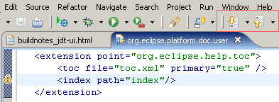
Scriptable refactorings
The refactoring framework has been considerable extended to allow scripting of refactorings. Refactorings executed in one workspace can now be exported and reapplied in other workspaces.
This exciting new feature allows you, for example, to make changes to API classes using refactorings (i.e. rename a type) and ship this changes to your clients. Your clients can then reapply the refactorings in there workspaces to prevent API incompatibilities.
A Refactoring History stores the information about refactorings executed in your workspace. You can access and modify this history through Refactor > History...

Two mechanisms can be used to export the recorded refactorings:
- Refactoring Script stores the required information in a xml file or the clipboard.
- JAR file export stores the required information in a JAR file.
Create and apply refactoring scripts
Support has been added to the refactoring framework to perform refactorings from scripts. Create a script from the refactoring history using Refactor > Create Script...

To apply the generated script on an arbitrary workspace use Refactor > Apply Script...
JAR file export with refactorings
You can now include refactoring information into a JAR file during a JAR export.
Use the JAR Export Wizard to export your code together with refactoring information. Access this wizard through File > Export... and select the refactorings to export on the first page of the wizard.

Your clients can update there workspaces by using Refactor > Migrate JAR File....

This will automatically offer to replay the stored refactoring on the source files in the project.
JUnit 4 support
Eclipse fully supports the new JUnit 4 and all its improvements. You can write JUnit 4 tests or use the New JUnit Test Case Wizard to generate the tests.

Use the full power of JUnit 4 now, in Eclipse.
JUnit view history
The JUnit view can now handle multiple concurrent test runs. You can switch between active and recent test runs through the new history. You can rerun tests from the history or rerun a single failed test without stopping already running tests.

This works with JUnit 3 as well as with JUnit 4.
Clean Up Wizard
The Clean Up Wizard provides functionality to change Java source code to the style you like. The wizard can also be used to change the code such that warnings disapear. This is more than just formatting your code. The formatter does only change spaces and new lines, whereas the Clean Up Wizard does transform your code.
For instance, there is a clean up to convert all for loops to enhanced for
loops where possible. Or it is now possible to mark all overriding methods in
a whole project with an @Override annotation.
The wizard is especially helpfull when converting Java 1.4 compatible code to Java 5.0.

Select a project, package, or file and use Source > Clean Up... to start this wizard.
Extract Superclass refactoring
A brand new refactoring called Extract Superclass extracts a common superclass from a set of sibling types. The selected sibling types become direct subclasses of the extracted superclass after applying the refactoring. Moreover, Extract Superclass allows to use the extracted superclass wherever possible in the code. All in just one step!
'JavaEditorTests' and 'PropertiesEditorTests' are the sibling types in the following example. The first picture shows the type hirarchy before the refactoring.

The next picture shows the type hirarchy after extracting 'EditorTests' with the Extract Superclass refactoring.

To invoke this refactoring use Refactor > Extract Superclass....
Introduce Indirection refactoring
Another new refactoring is Introduce Indirection. It lets you redirect all callers of a method to a new method. The new method calls the original one. You can replace the default implementation of the new method by any other if you like.
Such an indirection is useful when new behavior needs to be introduced to a method but the method:
- Cannot be changed because it is from a library.
- Must not be changed because it is an API method.
To execute the Introduce Indirection refactoring select a method, invoke Refactor > Introduce Indirection..., provide a name and the declaring class for the new method.

The method is added to the selected declaring class.

And all references are updated to call the new method.

Rename Type updates similarly named elements
The Rename Type refactoring can now rename variables and methods with names similar to the renamed type. This powerfull new feature helps to keep method and variable names synchronized with type names.

To invoke this refactoring select a type and use Refactor > Rename...
API aware refactorings
There are a number of existing refactorings which have been extended to support API compatibility by keeping the original member as a delegate to the refactored member:
- Rename Method
- Rename Field (for constants only)
- Move Method
- Introduce Parameter
- Change Signature

The generation of a delegate member to preserve API compatibility can be enabled by checking Keep original method as delegate to renamed method in the refactoring dialog.
Find Broken Externalized Strings
A new action can search for broken externalized strings. The search reports missing keys, unused keys, and duplicate keys.

To start the search select a properties file, a package, or a whole project and use Source > Find Broken Externalized Strings
Generate hashCode() and equals()
A new action can be used to generate the methods hashCode() and
equals().
You can select the fields on which the implementation should be based.

To invoke this action select a type and use Source > Generate hashCode() and equals()...
Surround With quick menu
A new quick menu allows to surround a selection of lines with code. The menu is extendable with custom templates. The templates are now aware of variables that need to be pulled out or made final.

To show the menu select a line and use Source > Surround With
You can add your custom templates on the Java > Editor > Templates preference page.
All the template needs is a ${line_selection} variable.
Paste type declaration creates new compilation unit
Importing and running a Java snippet from an e-mail or bugzilla has never been easier:
- Copy one or more Java type declarations (optionally including package and import declarations) to the clipboard
- In the Package Explorer, select a location inside the source folder of the Java project
- Choose Edit > Paste (Ctrl+V)
A new Java compilation unit is created with the given source, and the Java editor is opened on it.
When pasting into a package, the package declaration is added/updated to match the location. When pasting directly into a source folder, the package declaration in the copied source defines where the new compilation unit should get created.
New Quick Fixes
Several new quick fixes have been added, for example:
-
A Quick Fix to fix raw type accesses

The quick fix gleans information from usages within the same file. For a more sophisticated analysis, use the Infer Generic Type Arguments refactoring.
-
A Quick Fix to add a missing annotation attribute

-
A Quick Fix to add a new annotation member

Inline refactoring for binary methods
The Inline refactoring can now also inline methods from class files or JARs if a source attachment is available:
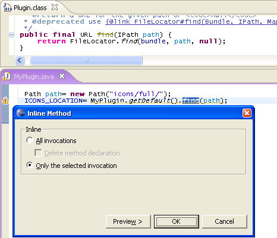
To invoke this refactoring select a method or constant and use Refactor>Inline...
Rename Package refactoring renames subpackages
The Rename Package refactoring does now also rename subpackages on request.

In this example, "junit.samples.money" is renamed to "junit.examples.money".
To invoke this refactoring select a package and use Refactor>Rename...
Filter for refactoring preview dialog
The refactoring preview page now supports filtering of changes. This is especially helpful when updating textual matches in comments and strings is requested while renaming Java elements.

The screen shot shows the rename dialog filtered for textual matches while renaming a class TestCase to TestCasee.
Changes related to the visibility of Java elements can now be filtered as well.
File content decorator
To find out what the first type in a compilation unit or class file is, you can enable Window > Preferences > General > Appearance > Label Decoration > Java Type Indicator:

Extensible sorting for content assist
In addition to the existing content assist sort orders, extenders may contribute custom sorters to the org.eclipse.jdt.ui.javaCompletionProposalSorters extension point. The user may choose to use the sort order on the Java > Editor > Content Assist preference page.
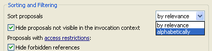
Multiple search views
It is now possible to have more than one Search Results view open at a time. Pin a search view to avoid it being reused for the next search. Or select to open a search from the history in a new view.
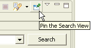
Smart caret positioning in dialogs showing Java names
Text fields for editing Java names now support smart caret positioning as you know it from the Java editor.
Ctrl+Left and Ctrl+Right now stop at camel case boundaries inside a name. Their shifted equivalents extend the selection in small steps, and Ctrl+Delete / Ctrl+Backspace delete the next / previous part of a name.
 |
|
| Ctrl+Right: |
 |
| Ctrl+Shift+Right: |
|
| write "Equal": |
|
| Ctrl+Delete: |
 |
| write "To": |
 |
Working set mode of Package Explorer now supports resource working sets
Resource working sets can now be used as top-level grouping nodes in the Package Explorer's working set mode.
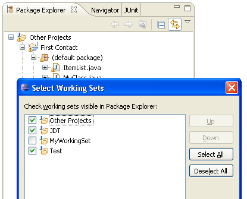
Note that the resource working sets used in this way are limited to referencing whole projects, not individual files or folders.
Internal Java model cache function of the max heap size
The size limit of the internal Java model cache is now a function of the max heap size (-Xmx VM argument on most JVMs) given to the Java Virtual Machine running their Eclipse IDE. Upping the heap size should have a noticeable performance improvement when there are large .jar files on the build classpaths of their Java projects.
Forward compatibility of .classpath file
Reading the .classpath file is now forward compatible with upcoming versions. If a .classpath file contains unknown elements and attributes as children of the classpathentry element, these are left untouched and are persisted.
Improved refactorings
Following improvements have been made to existing refactorings:
-
Local refactorings tolerate syntax errors
Refactorings that only affect a single file tolerate syntax errors. It is now possible for example to rename or extract a local variable at the top of a method that has not yet been written completely.
-
Inline refactoring for binary methods
The Inline refactoring can now also inline methods from class files or JARs if a source attachment is available.
To invoke this refactoring select a method or constant and use Refactor > Inline...
-
Rename Package refactoring can rename subpackages
The Rename Package refactoring does now also rename subpackages on request.
To invoke this refactoring select a package and use Refactor > Rename...
-
Filter for refactoring preview dialog
The refactoring preview page now supports filtering of changes. This is especially helpful when updating textual matches in comments and strings is requested while renaming Java elements.
Type selection history
Content assist, organize imports, and add import remember the most recently used types and sort the list of proposed types accordingly.
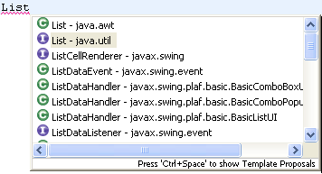If java.util.List is selected, then java.util.List will be the top element in the list of proposed types the next time List has to be imported:
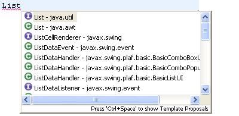Content Assist remembers right hand sides
Content assist (Ctrl+Space on most platforms)
remembers the types most recently used in similar situations. For
example, if you always assign ArrayList instances to List
variables, the ArrayList proposal will rank higher than
other type proposals. Also, the remembered types will be shown even if
there is no prefix.
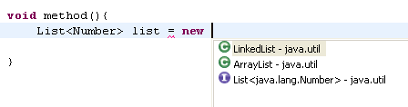
.
..
.
..
.
..